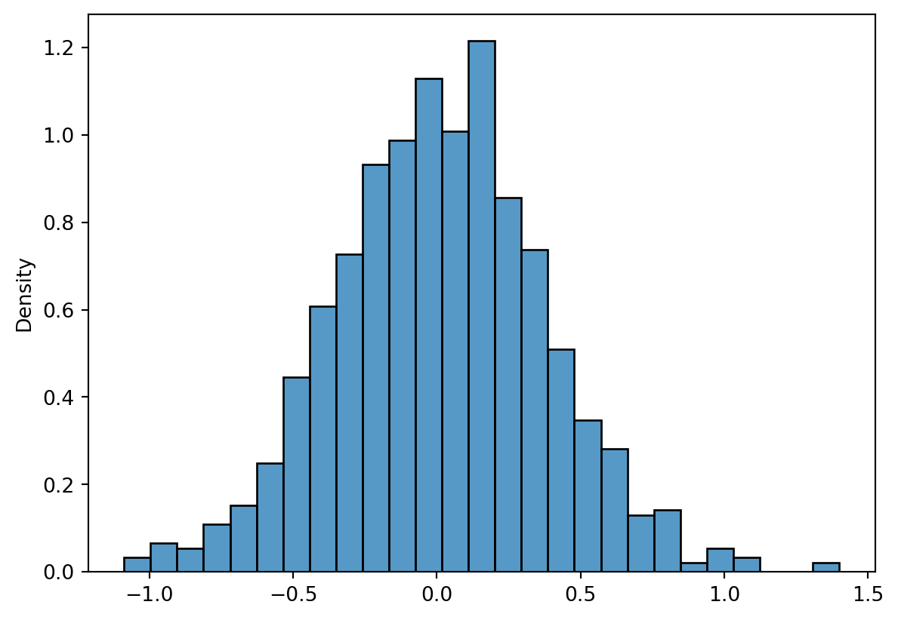

20/9: Added exercises and a section on the bootstrap in Python.
5.1 Curriculum
The core readings of Dekking et al.
Python notes about bootstrapping and modelling in Python.
5.1.1 Core readings
Dekking et al., Chapter 17: Basic statistical models, except Chapter 17.4. Ignore the paragraphs about the Poisson model.
Dekking et al., Chapter 18: The bootstrap
5.1.2 Bootstrap and Python
Note
Please read the book chapter on the bootstrap before reading these notes. Also, be aware that there are many of YouTube videos explaining the bootstrap in an intuitive way. If you struggle understanding what we are doing, try to take a look at a few of those, for instance this one.
Recall the bootstrap principle from the book. In the following definition, \(\hat{F}\) is the empirical cumulative distribution function of the data \(x_1, x_2,...,x_n\).
Bootstrap principle (Dekker et al.)
Use the dataset \(x_1, x_2,...,x_n\) to compute an estimate \(\hat{F}\) for the true distribution function \(F\). Replace the random sample \(X_1, X_2,...,X_n\) from \(F\) by a random sample \(X^\star_1, X^\star_2 ,...,X^\star_n\) from \(\hat{F}\), and approximate the probability distribution of \(h(X_1, X_2,...,X_n)\) by that of \(h(X^\star_1 , X^\star_2 ,...,X^\star_n).\)
The functions \(h\) will typically be estimators, e.g., the sample mean, sample median, quantiles, or even a kernel density estimator.
Let’s look an example using the supermarket sales data.
import pandas as pdsupermarket = pd.read_csv("supermarket_sales.csv")supermarket.describe()
Unit price
Quantity
Tax 5%
Total
cogs
gross margin percentage
gross income
Rating
count
1000.000000
1000.000000
1000.000000
1000.000000
1000.00000
1000.000000
1000.000000
1000.00000
mean
55.672130
5.510000
15.379369
322.966749
307.58738
4.761905
15.379369
6.97270
std
26.494628
2.923431
11.708825
245.885335
234.17651
0.000000
11.708825
1.71858
min
10.080000
1.000000
0.508500
10.678500
10.17000
4.761905
0.508500
4.00000
25%
32.875000
3.000000
5.924875
124.422375
118.49750
4.761905
5.924875
5.50000
50%
55.230000
5.000000
12.088000
253.848000
241.76000
4.761905
12.088000
7.00000
75%
77.935000
8.000000
22.445250
471.350250
448.90500
4.761905
22.445250
8.50000
max
99.960000
10.000000
49.650000
1042.650000
993.00000
4.761905
49.650000
10.00000
Observe that each column has \(n=1000\) observations. Moreover, the sample mean of gross income is \(\approx 15.37\), which is the data we will focus on. We will try to figure out the uncertainty, broadly speaking, of this estimate, using the bootstrap.
We will not sample directly from the empirical cumulative distribution function. Instead, we will sample with replacement from the observed data. Sampling with replacement is not difficulty conceptually, but if are unfamiliar with the concept, use e.g. this YouTube video or read the Wikipedia page.
We need to sample \(n = 1000\) observations with replacement from supermarket["gross margin percentage"]. We will do this a large number of times, n_reps = 1000 is standard, and a recommended default option when doing bootstrapping.
First we make an rng object. This is required for doing the sampling without replacement. Using an rng object is crucial here, as you want the random samples to reproduce on different machines and at different times!
import numpy as nprng = np.random.default_rng(seed=313)
Now we use the Numpy function choice to sample with replacement from the underlying data.
Now we \(1000\) columns containing \(1000\) samples with replacement from x. Now we need to find the distribution of these sample means. We have done such an exercise many times already, but always with purely simulated data.
import seaborn as snsimport matplotlib.pylab as pltmeans = boots.mean(axis =1) - x.mean()sns.histplot(means, stat="density")plt.show()

The histogram above shows, approximately, what sort of sample means we could have got had we observed a different sample from the true distribution \(F\). Looking at this histogram, we see there is substantial uncertainty in the sample mean of gross income, with deviations from the observed sample mean ranging from \(-2\) to \(+2\) appearing to be quite likely. To be more precise, we can calculate the quantiles and standard deviation of the bootstrapped sample means.
means.std()
1.1363259590415926
It follows that the standard deviation of the sample mean is approximately \(1.17\) by the bootstrap principle. Moreover, we can calculate some quantiles.
np.quantile(means, (0.1, 0.9))
array([-1.4862985, 1.404376 ])
When we calculate the \(0.1\) and \(0.9\) quantiles and add the sample mean, we can - very informally! (we will make this formal later on) - say that we are \(90\%\) confident that the true population mean lies in the resulting interval.
np.quantile(means, (0.1, 0.9)) + x.mean()
array([13.8930705, 16.783745 ])
In this case, our bootstrapped confidence interval is approximately \([13.9, 16.9]\). This is a reasonably intuitive quantification of the uncertainty in the data set.
5.2 Exercises
The following two exercises are the most important and should be attempted first.
Make a function that calculates and shows the histogram of the bootstrapped means for any vector x. Apply it to the columns unit price and quantity of the supermarket data frame (found e.g. here.
Using the central limit theorem we can derive the asymptotic distribution for the sample mean. Make a function that superimposes a normal distribution as implied by the central limit theorem on the histograms above. (Hint: You need to take care of the rescaling factor \(\sqrt{n}\) and the standard deviation \(\sigma\) in the central limit theorem \(\sqrt{n}(\overline{X}-\mu)/\sigma \to N(0,1))\); another way to write this result is \(\overline(X) - \mu \approx N(0, \sigma/\sqrt{n})\).)
5.2.1 Chapter 17
17.1
17.2
17.4 (use Python to visualize part b)
17.5
17.6
17.10
17.11
5.2.2 Chapter 18
18.1 (Hint: How many combinations are double counted due to the two 1s?)